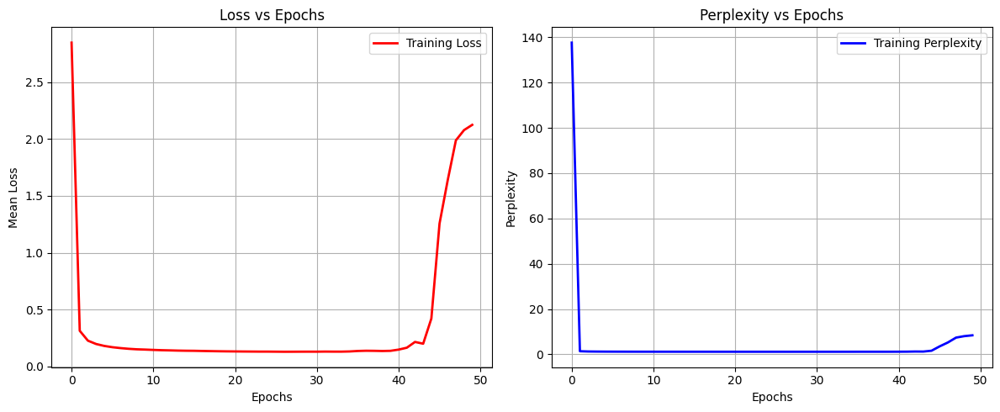
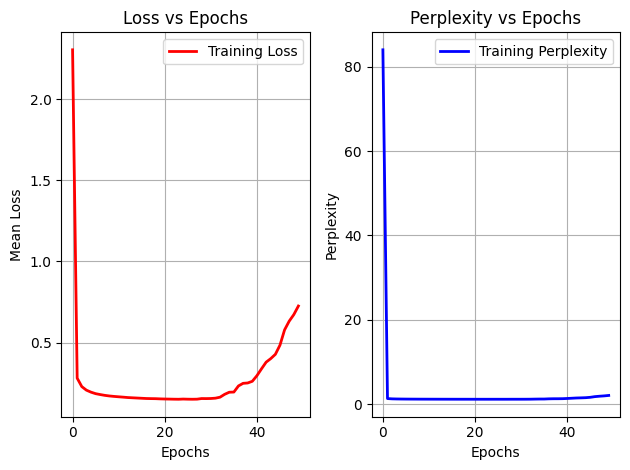
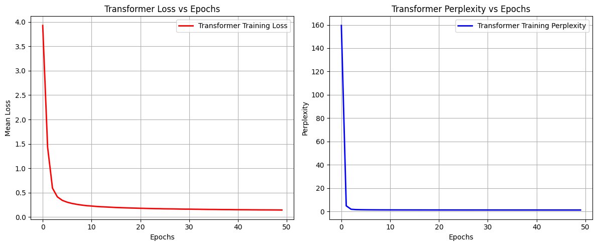

This project explores how different language modelling approaches learn to generate text in the style of Alice's Adventures in Wonderland. The work starts with a character-level GRU model, then moves to word-level recurrent neural networks, pre-trained GloVe embeddings, a custom decoder-only transformer, and finally a fine-tuned DistilGPT-2 model.
The main goal is to compare models trained from scratch with a pre-trained transformer that is fine-tuned on a specific corpus. The results show a clear pattern: custom RNNs and transformers can learn the structure of the book, but fine-tuning a pre-trained transformer produces more natural and context-aware text with much less task-specific training.
Link to GitHub Repository: Fine-Tuning Language Models for Text Generation ↗
Link to Fine-Tuned Language Model: alicesadventures-distilgpt2-finetuned ↗
The technical problem is simple but important: given a small literary corpus, can a model learn the language patterns well enough to generate coherent continuation text? This is the same core idea behind many real-world NLP systems, such as autocomplete, domain-specific chatbots, writing assistants, and internal knowledge copilots.
The practical challenge is that different language modelling approaches behave very differently. Character-level models are flexible but often struggle with long-term meaning. Word-level models capture meaning better but can fail on unknown words. Transformers handle context more effectively, while pre-trained models such as DistilGPT-2 already know general English and only need fine-tuning to adapt to a specific domain.
The dataset is the text of Alice's Adventures in Wonderland by Lewis Carroll. The text is cleaned by removing metadata and unnecessary spacing, then converted into sequences for language modelling.
The cleaned character-level dataset contains approximately 143,000 character tokens and 74 distinct character IDs. For the word-level models, the vocabulary contains roughly 3.3k word tokens. Each model is trained to predict the next token in a sequence.
The project deliberately moves from simpler models to more advanced ones. This makes the comparison meaningful because each model family solves a different limitation of the previous approach.
| Model | Main Idea | Why It Matters |
|---|---|---|
| Character-Level GRU | Predicts the next character using an embedding layer and GRU. | Good for learning spelling and local patterns, but weaker at meaning. |
| Deep Character GRU | Uses larger embeddings and stacked GRU layers. | Improves generation quality but becomes more unstable during training. |
| Word-Level GRU | Predicts the next word instead of the next character. | Captures semantic context better than character-level modelling. |
| GloVe RNN | Uses pre-trained static word embeddings. | Tests whether external semantic knowledge improves generation. |
| Custom Transformer | Uses causal self-attention and positional embeddings. | Provides more stable and faster training with fewer parameters. |
| Fine-Tuned DistilGPT-2 | Starts from a pre-trained transformer and adapts it to the Alice corpus. | Produces more natural text and handles unknown prompts better. |
Loss and perplexity are used to monitor model training. Perplexity is especially useful for language modelling because it tells how uncertain the model is when predicting the next token. Lower perplexity generally means the model is more confident and better aligned with the training text.

Figure 1. Word-level GRU training curve.

Figure 2. GloVe-based RNN training curve. Pre-trained static embeddings converge quickly but do not outperform the learned 512-dimensional embedding model.

Figure 3. Custom transformer training curve. The transformer remains stable across all 50 epochs and avoids the severe training deterioration seen in some GRU models.
The models are mainly evaluated with training loss, perplexity, and generated text quality. Since the goal is language generation rather than classification, the most important question is not only whether the loss is low, but also whether the generated text is coherent, relevant, and stylistically close to the source corpus.
| Model | Best / Final Loss | Best / Final Perplexity | Key Observation |
|---|---|---|---|
| Baseline Character GRU | 1.3818 | 3.9842 | Improves early, then becomes unstable after later epochs. |
| Deep Character GRU | 0.3028 | 1.3537 | Much better than the baseline, but suffers from exploding-gradient-like instability. |
| Word-Level GRU | 0.1253 | 1.1336 | Best scratch-trained RNN result; captures semantic context better. |
| GloVe RNN | 0.1474 | 1.1589 | Slightly worse than learned embeddings, likely because the frozen GloVe layer uses only 100 dimensions. |
| Custom Transformer | 0.1430 | 1.1538 | Stable, fast, and parameter-efficient compared with the larger GRU models. |
Achieved by the word-level GRU.
Shows strong next-word prediction performance.
Much smaller than the large GRU variants.
The most important qualitative result comes from comparing raw DistilGPT-2 with the fine-tuned version. The raw model produces fluent English, but it does not understand the Alice-specific context. After only three epochs of fine-tuning, the model starts producing text that is much more aligned with the characters, objects, and style of the book.
| Prompt | Raw DistilGPT-2 | Fine-Tuned DistilGPT-2 |
|---|---|---|
| The White Rabbit | The raw model moves into unrelated content, such as describing the White Rabbit as a cat breed. | The fine-tuned model generates Alice-style text involving the jury, characters, and book-specific context. |
| Suddenly a large | The raw model generates generic news-like text about hunger strikes. | The fine-tuned model produces a scene-like continuation that fits the story world better. |
| She looked at | The raw model produces generic conversational text unrelated to the book. | The fine-tuned model mentions Alice-style objects and characters, including the White Rabbit. |
“The White Rabbit is the second of three breeds of the cat...”
“The White Rabbit, the jury-box, the three birds of the jury...”
This comparison is the strongest portfolio point of the project. It shows why fine-tuning matters: a general model may produce fluent language, but a fine-tuned model learns the target domain.
Deep Learning: TensorFlow, Keras, PyTorch, GRU networks, stacked RNNs, dropout, embeddings, sequence modelling
Language Modelling: character-level tokenization, word-level tokenization, next-token prediction, text generation, perplexity evaluation
Transformers: decoder-only transformer architecture, causal masking, multi-head self-attention, positional embeddings
Fine-Tuning: DistilGPT-2, Hugging Face Transformers, AdamW, corpus-specific adaptation, prompt-based generation comparison
Pre-Trained Embeddings: GloVe 6B embeddings, frozen embedding layers, embedding matrix construction
Training Workflow: checkpoints, model saving/loading, training diagnostics, loss/perplexity tracking, qualitative evaluation
Python & Data Work: NumPy, pandas, regex text cleaning, token sequence preparation, matplotlib visualization
The word-level GRU achieves the best RNN performance, with a loss of 0.1253 and perplexity of 1.1336. This suggests that word-level tokenization captures semantic patterns more effectively than character-level tokenization for this corpus.
The custom transformer is more stable than the GRU-based models and trains much faster. Even with fewer parameters, it avoids the severe instability observed in some recurrent models. This demonstrates the practical advantage of attention-based architectures for sequence modelling.
The fine-tuned DistilGPT-2 model provides the clearest qualitative improvement. Compared with raw DistilGPT-2, it generates text that is much more specific to the Alice corpus. This shows that fine-tuning a pre-trained language model can be more effective than training a small model from scratch when natural text quality is the main goal.